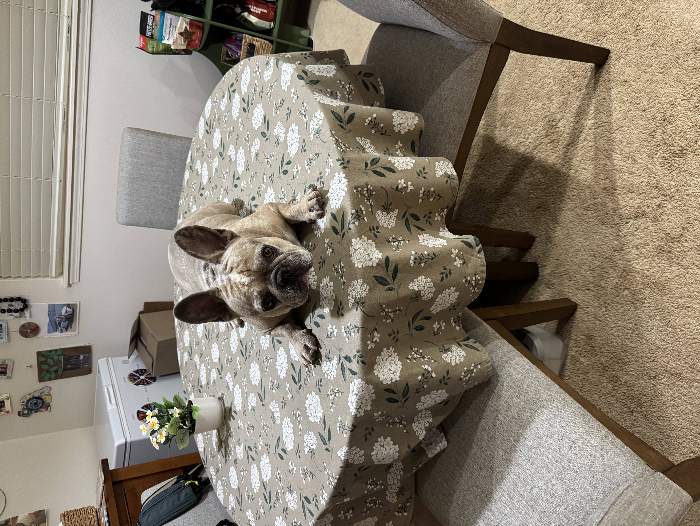
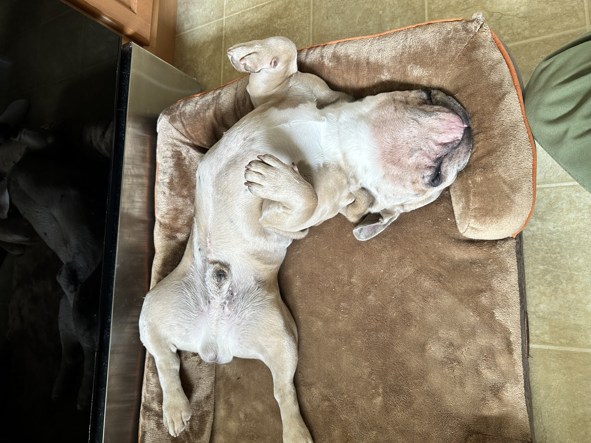
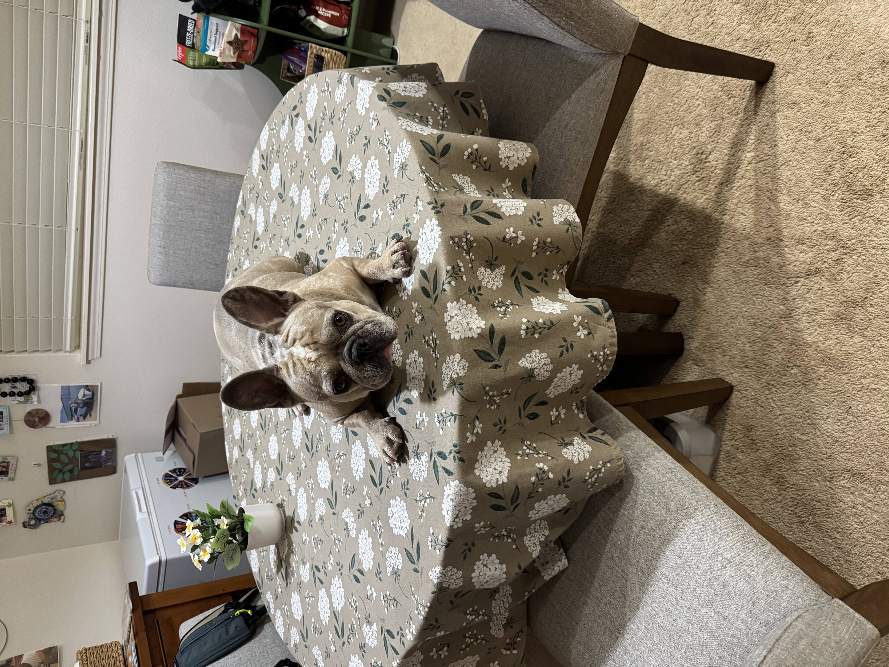
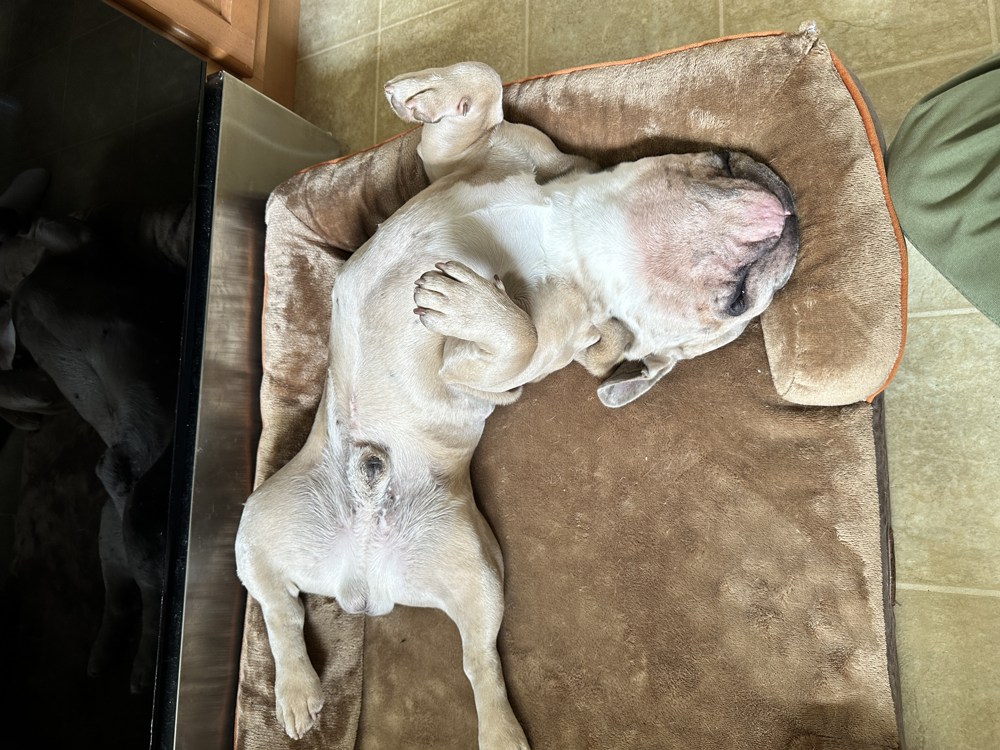
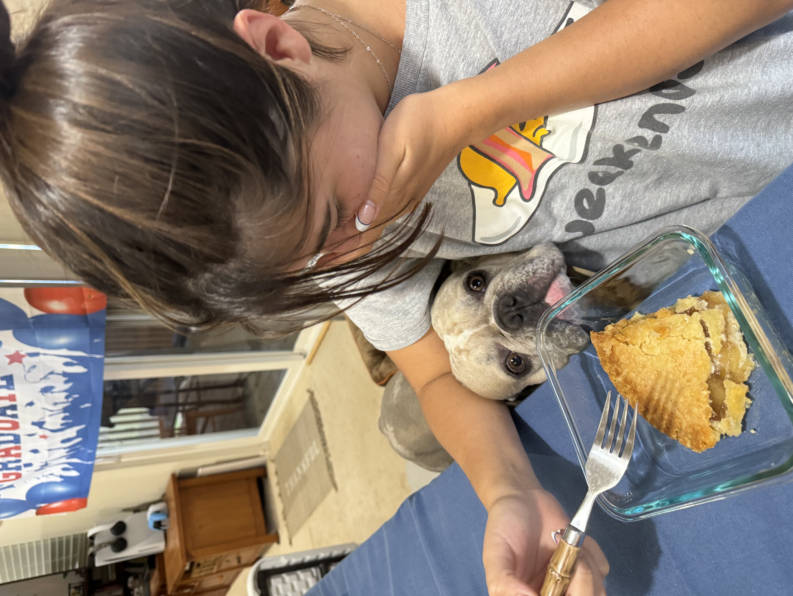
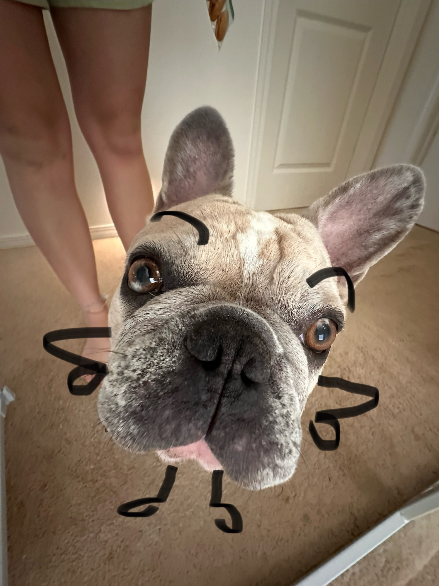
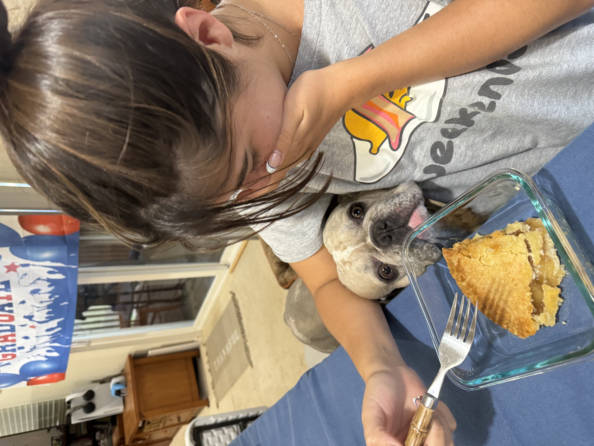
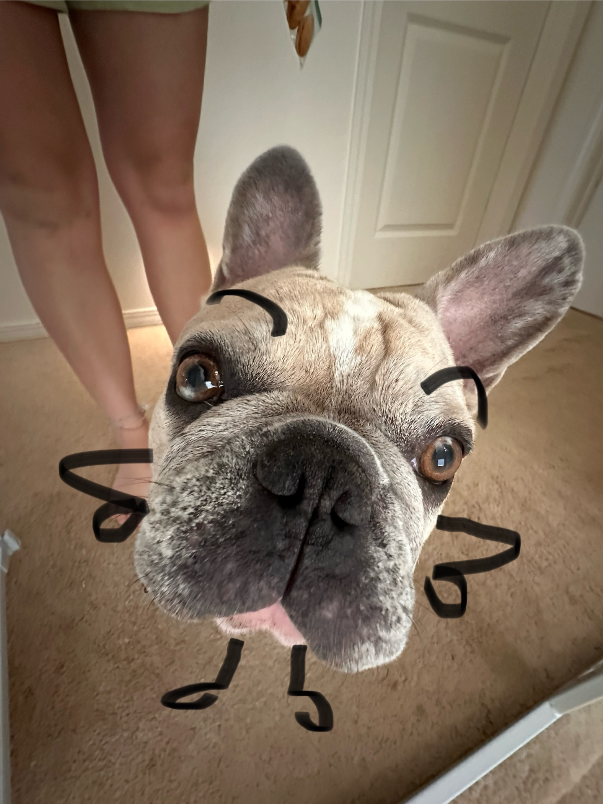

Meet My Dog!
This is Bruno 🐶🐾🦴

Bruno is a very unique French bulldog. As of December 1, 2025, he is 4 years old. Bruno was also born and raised on the island of Maui, Hawaii. His fur is a mix of dark and light greys, tan, and white, making him stand out from his fellow frenchie brethren. Not only is Bruno striking in appearance, but also in personality. Many say that frenchies are amazing "lap dogs" however Bruno chooses to live his life in sport mode. He is always down for either a fun, new adventure, or displaying one of his many silly skills or hobbies. Keep scrolling to see him in action!


 



 


